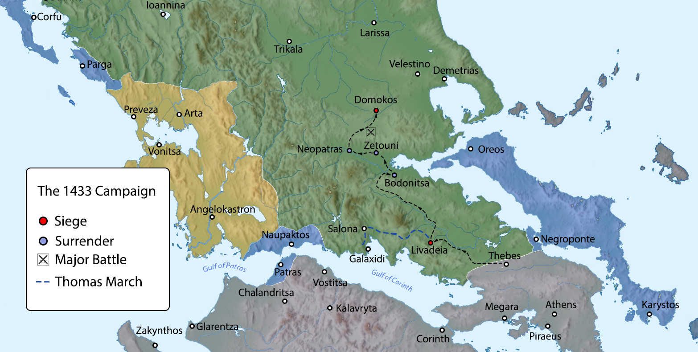
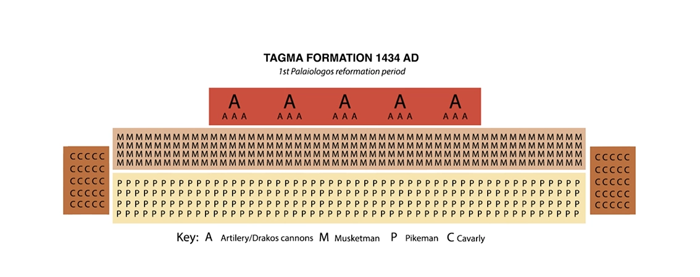
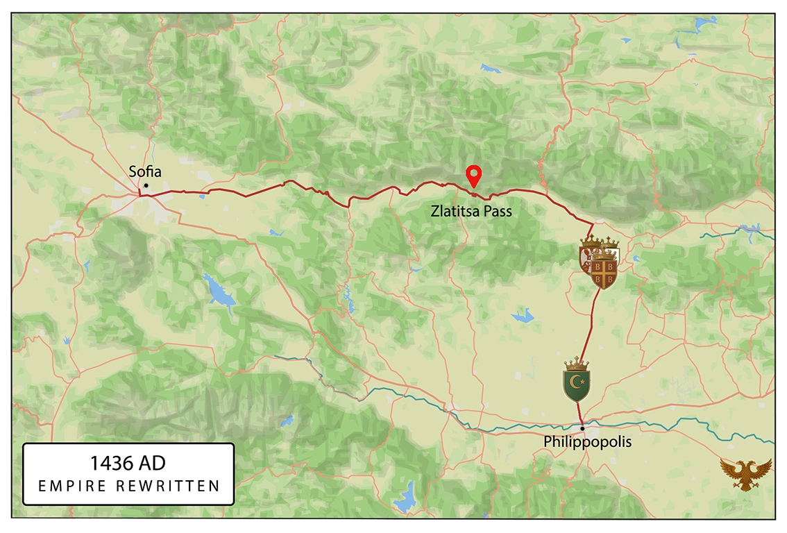
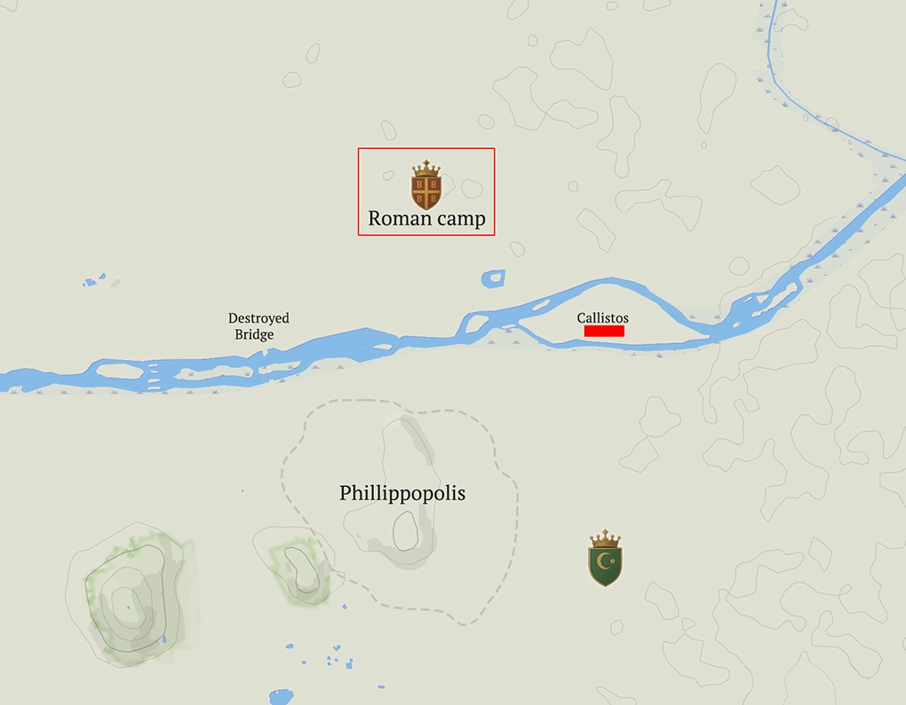
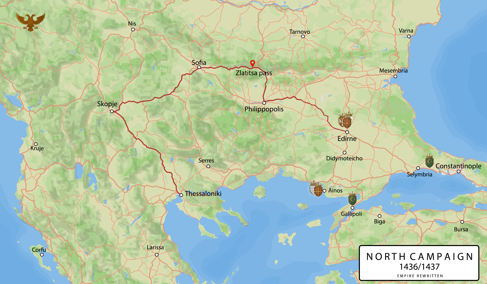
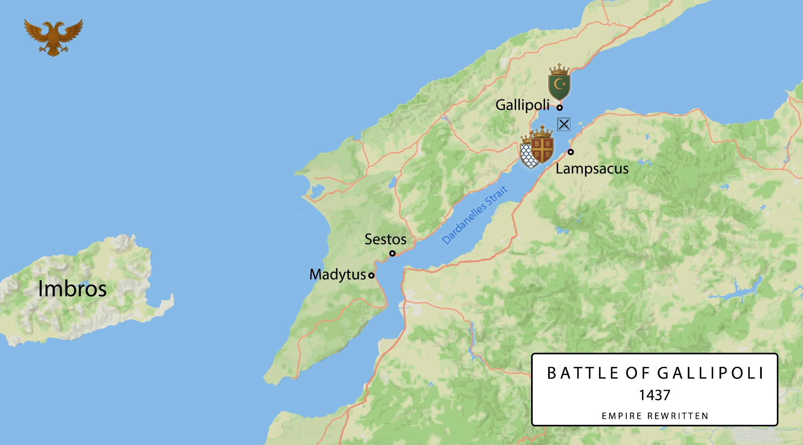
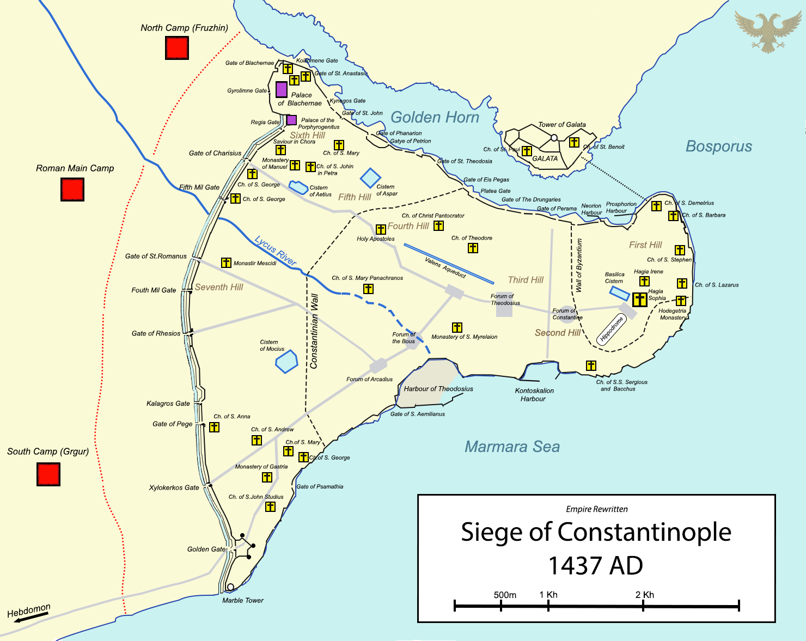

The Timeline - Books I–II (1428–1437)
Key events from Books One and Two, focused on Constantine's rise and the reshaping of the Morea.
⚠ Contains spoilers for Books I and II.
The Awakening
Michael Jameston, a 55-year-old American book dealer, wakes up in the body of Constantine Palaiologos, Despot of the Morea, in Clermont Castle.
The Sale of Selymbria
To fund his industrial and military vision, Constantine decides to sell his ancestral holdings in Selymbria.
The Triple Base Strategy
Constantine establishes a regional organization: Andravida (agriculture), Clermont (military/arsenal), and Glarentza (commerce/industry).
Heir to the Morea
Theodora (Creusa Tocco) reveals she is pregnant, providing hope for a dynastic succession.
Arrival of the Craftsmen
George Sphrantzes returns from Constantinople with 30 skilled artisans (blacksmiths, carpenters, masons) and funding to begin the industrial revolution.
The First Page of History
The Morea Publishing Company produces the first flawless page of printed text using a rudimentary movable-type press.
Succession in Epirus
Carlo I Tocco dies and is succeeded by Carlo II Tocco, shifting the political landscape in Western Greece.
The First Book Sale
The first 60 copies of the Latin Bible are sold to Venetian and Genoese traders for 30 gold ducats each, proving the printing press's economic potential.
The Birth of Drakos
After initial failures, the first successful bronze field cannon, named Drakos, is cast and tested near Clermont.
The Tragedy of Glarentza
Constantine's wife, Theodora, and their child die during childbirth, a loss that hardens him at the root and gives his reforms their colder edge.
Ottoman Expansion
News reaches the Morea that Ioannina has fallen to the Ottomans under Sinan Pasha.
The Fall of Thessaloniki
The Ottomans capture Thessaloniki after a prolonged siege, followed by a three-day plunder and the conversion of churches into mosques.
Naval Victory over Pirates
During a trade mission to Ragusa, the flagship Kyrenia uses its new cannons to sink a Dalmatian pirate vessel.
Sabotage at the Press
A monk named Father Petros, sent by anti-unionist factions in Mystras, is caught attempting to burn the Glarentza printing press.
The Scholar Bessarion
The philosopher Plethon and his student Bessarion visit Glarentza; Plethon is invited to stay permanently to guide the cultural renaissance.
Economic Sovereignty
Constantine establishes a new mint in Glarentza to strike gold coins bearing the Palaiologos eagle, asserting economic independence from foreign currencies.
A New Pope
Pope Eugene IV (Cardinal Condulmer) is elected, signaling a shift in Roman politics and potential support for the Union of Churches.
The Warning Strike
Murad II sends Turahan Bey to breach the Hexamilion as a warning; Constantine meets the cavalry in open ground, where pike formations and canister-loaded field cannon shatter the charge in his first true battle, and the survivors chant his name.
The Seeds of Schism
In the aftermath, Constantine rescues captives the Ottomans abandoned, among them Maria and the radical scholar Iskandar, whose ideas suggest weakening the Ottomans by fracture rather than steel alone.
The Terni Contract
In Italy, Constantine signs a condotta with Francesco Sforza, securing 4,000 elite mercenaries for the defense of the Morea.
The Medici Investment
Constantine secures a massive 20,000 gold florin investment from Cosimo de’ Medici to expand printing operations across Europe.
The Road Ambush
Following Thomas’s wedding, Constantine’s convoy is ambushed by Theodore’s agents; Captain Andreas identifies the attackers as Theodore’s soldiers.
The Siege of the Hexamilion
Sultan Murad II launches a massive assault on the Hexamilion Wall, which is successfully repelled by Constantine’s combined-arms tactics.
The Capture of Athens
Following the victory at the wall, Constantine captures Athens; the Greek population revolts and kills the pro-Ottoman Duke Antonio Acciaioli.
The Reorganization of Mystras
Constantine formally assumes control of Mystras and establishes the Tachis Ippos, a rapid horse-relay postal system.
The Great Betrayal
In a palace coup in Constantinople, Theodore and Demetrios assassinate Emperor John VIII; Demetrios then betrays and murders Theodore to seize the throne as an Ottoman puppet.
The News Reaches the Morea
Diocles Argyropoulos arrives in Glarentza with news of the coup, prompting Constantine to claim the imperial title.
Coronation in Mystras
Constantine is formally crowned Emperor of the Romans in the Church of Saint Demetrios, rejecting Demetrios’s demand for fealty.
The Capture of Zakynthos
Constantine launches an expedition to Zakynthos, seizing the island from Tocco’s remnants and appointing Stylianos as its Orthodox bishop.
The Northern Offensive
Constantine launches a major campaign into Thessaly with 12,000 men to aid the Albanian revolt and secure a buffer zone.
The Blinding at Livadeia
After capturing the fortress of Livadeia, Constantine orders the blinding of the Ottoman prisoners as a psychological warning to other garrisons.
The Battle of Domokos
In a decisive field engagement, Constantine’s modernized army defeats Sultan Murad II’s main host, forcing the Sultan to retreat northward.

Kings Take Notice
Constantine returns in triumph to Glarentza after Domokos; congratulations and pledges arrive from Rome, Buda, Venice, Burgundy, and Florence, and he resolves to negotiate with the Pope in person.
The Voyage West
The fleet sails for Rome from Glarentza.
A Cardinal Choice
In Rome, Bessarion is offered elevation to the College of Cardinals; Constantine counsels him to accept.
The Eagle and the Keys
Pope Eugene IV pledges a crusading bull, papal gold, and a galley squadron, reports Sigismund's promise of 30,000 men, and proposes a Burgundian child-betrothal to Agnes of Cleves.
Proclamation at Buda
Emperor Sigismund publicly proclaims a new crusade against Murad II, invoking Domokos.
The First Palaiologian Reformation
Constantine reorganizes the army into six mixed-arms Tagmata, naming Andreas Arxistratigos field commander and Laskaris Admiral.

The Crusade Marches
The crusader host departs Serbia and pushes south, racing to link with Constantine before Murad can concentrate.
The Homecoming of Skanderbeg
Gjergj Kastrioti slips home to Albania and pledges his sword to the wider war.
The Iron Gate
Sigismund forces the Vardar but is killed at Demir Kapija; Hunyadi retreats with a remnant and the old crusading order collapses.
The Fall of Thessaloniki
With the Venetian–Papal fleet sealing the gulf, Constantine recovers Thessaloniki.
The Field of Fire
At the Battle of Edessa, Constantine's thin line and rotating musket fire shatter Murad's host; the Sultan charges to his death rather than flee.
The Silence After Thunder
Murad II's body is washed, shrouded, and returned under seal; the army marches on, an age of Ottoman invincibility broken.
A Match for the Realm
Constantine declines the Burgundian child-match and accepts Đurađ Branković's offer of his daughter Katarina to secure the succession.
A Forge for War
Luca and Elias perfect seamless, steel-bored gun barrels at the Glarentza arsenal.
The Wedding
Katarina Branković arrives by Ragusan convoy and is married to Constantine at Glarentza amid cannon salutes and a multilingual crowd.
Down the Masters
An uprising flares in Ottoman Dobruja under the agitator Iskander, the first fruit of the Ieros Skopos seeded abroad.
The City Lost From Within
Demetrios admits an Ottoman garrison "to keep order"; it seizes the gates, barracks, and harbor, confines the Empress Helena, and reduces him to a paper emperor.
The Kingmaker's Bargain
Orhan, a fugitive Ottoman claimant, reaches Glarentza and offers to split the empire if Constantine backs his bid for the sultanate.
To Recover the Queen of Cities
At Clermont, Constantine commits to retaking Constantinople, naming Skopje, as the campaign's first hinge.
On the Vardar Road
The imperial host leaves Thessaloniki and pushes up the Vardar.
The Fort at Skopje
Skopje's defenders strip the lower town and pull into the Kale; Constantine breaches the thinner town-side wall and takes the fortress.
The Smoke of Sofia
The army reaches Sofia through scorched fields and fouled wells, the Ottomans burning and poisoning everything they cannot carry.
The Zlatitsa Pass
Constantine storms an Ottoman barricade choking the rain-soaked pass, seizing the heights on both ridges to open the road into Thrace.

The Crossing in the Fog
Under fog on the Maritsa, Lieutenant Markos's rope team seizes the Ottoman-held bank under arrow-fire to anchor the guide line for the army's crossing.

Winter Lock-In
After hard fighting, Constantine takes Philippopolis and digs in through the cold, disease thinning the ranks.
The Siege of Edirne
Halil withdraws the main Ottoman army east toward Constantinople with the boy Sultan, leaving Karaca Bey to hold the city; the army crosses the Maritsa, the defenders burn their own palace rather than surrender, and after a four-day bombardment Constantine storms Edirne street by street.

The Strait Shut
Admiral Laskaris runs the imperial fleet through the Dardanelles and meets the Ottoman squadron off Gallipoli. The Katarina opens her broadside and breaks the enemy line with chain shot; the Ottoman fleet scatters back toward the peninsula, the strait now held. Gallipoli itself stays in Ottoman hands behind its towers and shore guns, but the channel is closed, and no army in Anatolia can cross to relieve the City. Prince Thomas peels off for Galata to reach Constantinople ahead of the assault.

The City Recovered
Constantine storms the walls at Blachernae and the sea wall at Petrion; Constantinople is Roman again. The Empress Helena and Prince Thomas are found alive, Halil is found dead, the boy Sultan flees to Anatolia, and the liturgy is served once more in Hagia Sophia.
